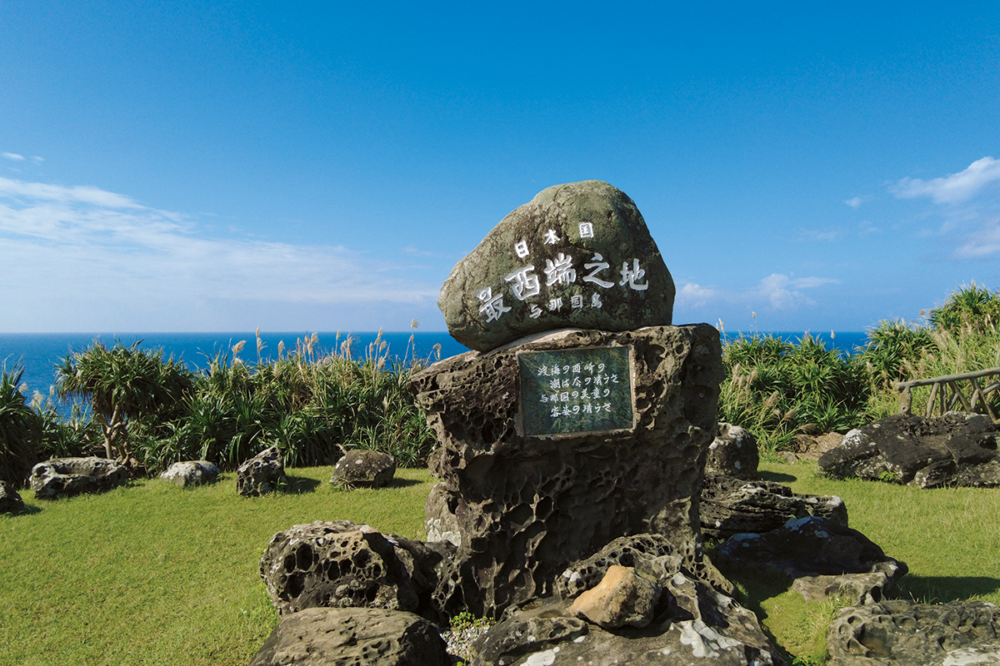
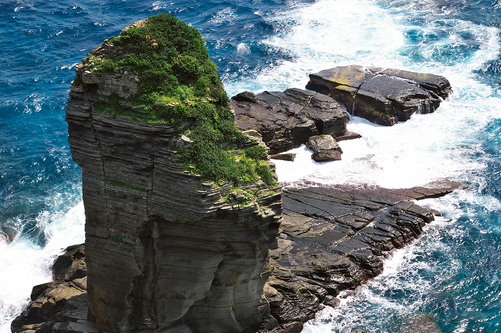
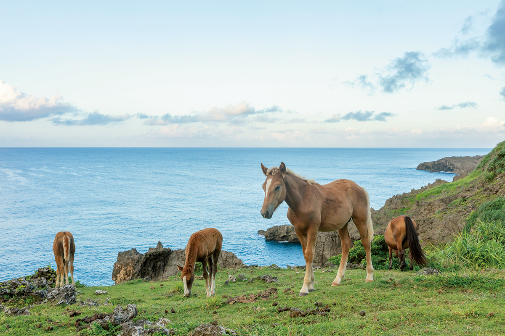
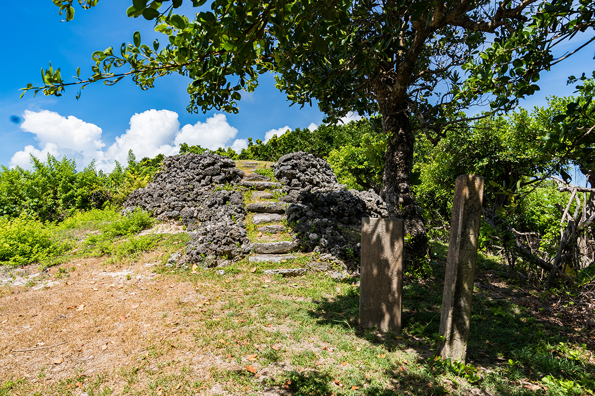
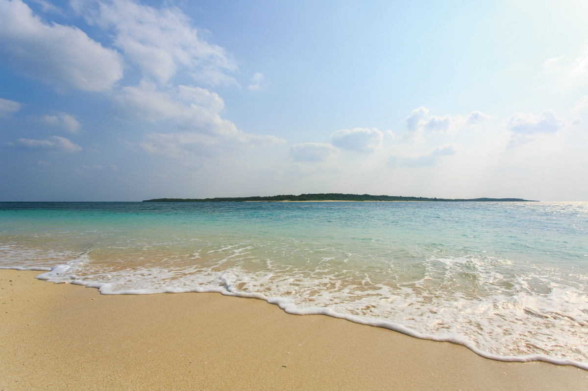

Префектура Окинава · Ёнагуни и Арагусуку · острова
Ёнагуни и Арагусуку: самый западный остров Японии и два островка Яэямы, куда не ходят паромы

В префектуре Окинава около 160 островов, и на самом краю архипелага Яэяма лежат три очень разных. Ёнагуни замыкает Японию с запада, а два острова Арагусуку почти безлюдны и хранят память о королевстве Рюкю и легенду о русалках.
Край страны
Ёнагуни: остров, с которого видно Тайвань
Ёнагуни лежит дальше всех на запад среди японских островов. В ясный день за морем отсюда виден берег Тайваня, а самая западная точка страны отмечена памятным знаком на мысе Иридзаки. Остров невелик: около 29 квадратных километров, береговая линия 27,5 километра, высшая точка, гора Урабу, поднимается на 231 метр. В 2024 году здесь жили 1725 человек.
Вода вокруг Ёнагуни очень прозрачная, и на дне у берегов лежат так называемые подводные руины. К ним ходят туры на полупогружном судне: через окна в корпусе видно и сами каменные формы, и подводный пейзаж вокруг.

Символом острова считают скалу Татигами-ива у юго-восточного берега. Её странный силуэт хорошо виден с двух смотровых площадок на острове. Ещё одна известная скала носит имя Гункан-ива, «скала-броненосец».
Марлин, соль и трава долголетия
Ёнагуни окружает течение Куросио, и главный дар моря здесь марлин. Вторая местная гордость это соль, которую выпаривают из здешней чистой морской воды. Горы на острове тоже щедрые. Про траву тёмэйсо говорят: «съешь один кустик, и проживёшь на день дольше». Из неё готовят местное блюдо «су», одно из обязательных подношений на обрядах острова. С острова везут и чёрный сахар, а главный праздник года здесь праздник урожая.

На острове живёт ёнагунская лошадь, японская аборигенная порода. Посёлок Ёнагуни объявил её природным памятником. Невысоких лошадей можно встретить на травянистых склонах у моря.
Многие японцы знают Ёнагуни по сериалу «Клиника доктора Кото»: здесь его снимали, и декорация сельской клиники стала одной из популярных достопримечательностей острова.
Остров Ёнагуни
- Адрес
- префектура Окинава, уезд Яэяма, посёлок Ёнагуни
- Телефон
- +81 980-87-2402 (туристическая ассоциация посёлка Ёнагуни)
- Как добраться
- самолётом из аэропорта Наха около 1 часа 15 минут, из аэропорта Исигаки около 30 минут; паромом «Ферри Ёнакуни» из порта Исигаки около 4 часов. По острову на автобусе, такси, арендованной машине, мотоцикле или велосипеде
Сторожевой пост
Арагусуку, северный остров: дым над морем
Арагусуку состоит из двух островов. Северный, Камидзи, вытянут в длину и окружён коралловыми рифами с очень прозрачной водой. Площадь его 1,76 квадратного километра, а в 2024 году здесь жили 9 человек.
Остров лежит близко к Китаю, и во времена королевства Рюкю он служил опорным пунктом: отсюда следили за иностранными кораблями и передавали вести между островами Сакисима, южной окраиной королевства. Об этой истории напоминает дозорный пост Таканику. На нём разжигали сигнальный огонь, и дым был виден с соседних островов. Сегодня пост охраняется государством как объект культурного наследия.

Из местных продуктов на Камидзи называют ирабутя, рыбу-попугая, и питахайю. Главный праздник острова называется Акамата-Куромата.
Легенда
Арагусуку, южный остров: последний житель и русалки
Южный остров, Симодзи, ещё меньше: 1,57 квадратного километра, и в 2024 году на нём жил один человек. Арагусуку называют ещё «Панари», то есть «отдалённый остров». Здесь сохранился вид Окинавы, какой она была когда-то.
Когда-то у острова водилось много дюгоней, а их считали русалками. Отсюда и легенда о русалках, которую рассказывают до сих пор.

Главное место острова это пляж Симодзи с прозрачнейшей водой и красивым песком. У пляжа есть причал, и с него можно разглядывать кораллы и тропических рыб. На острове есть ещё пастбище Панари.
Регулярных рейсов на оба острова Арагусуку нет. Сюда приезжают с турами с островов Ириомотэ и Исигаки, а по островам ходят пешком.
Острова Арагусуку (Камидзи и Симодзи)
- Адрес
- префектура Окинава, уезд Яэяма, посёлок Такэтоми
- Телефон
- +81 980-82-5445 (туристическая ассоциация посёлка Такэтоми)
- Как добраться
- регулярного сообщения нет, только туры с островов Ириомотэ и Исигаки. По острову пешком